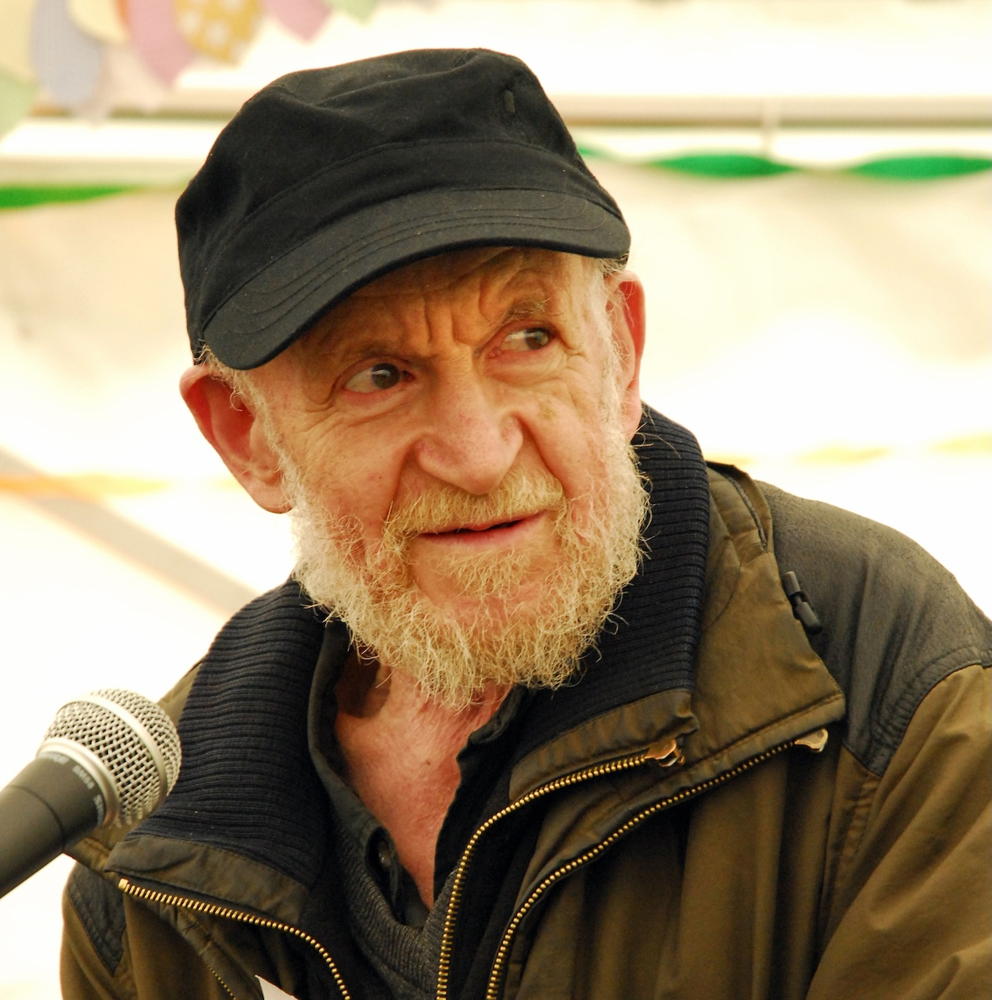

About
The Gustav Metzger Foundation is a UK-based charity established following the artist's death in 2017. During his lifetime, Metzger set out the charitable aims of the Foundation, reflecting the ethical, political and philosophical concerns that shaped his artistic practice.
The Foundation's purpose is to support public understanding and appreciation of Metzger's work, and to enable the presentation of his art and ideas through exhibitions, publications and projects. Central to these aims is Metzger's belief in art as a catalyst for critical thought, social responsibility and collective action.
Metzger's aims for the Foundation also reflect his wider social and environmental concerns. They include promoting dialogue, understanding and reconciliation within and between communities; encouraging equality, diversity and respect for racial and religious difference; and advancing public education around ecology and environmental issues.
Environmental responsibility was fundamental to Metzger's thinking. His aims include the conservation and protection of the natural environment, support for research into ecological systems and human impact, and attention to the human and non-human consequences of environmental change, including the relief of suffering where it arises.
Together, these aims set out the scope and intentions of the Gustav Metzger Foundation as conceived by the artist, including his concern with the risk of global extinction arising from human activity, and provide a framework through which his legacy may be understood and carried forward.
Photo: Dartington, Kate Mount